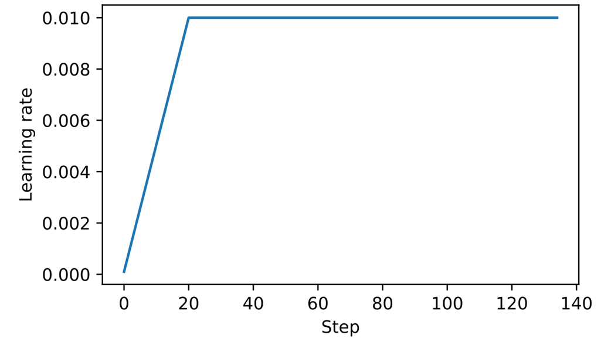
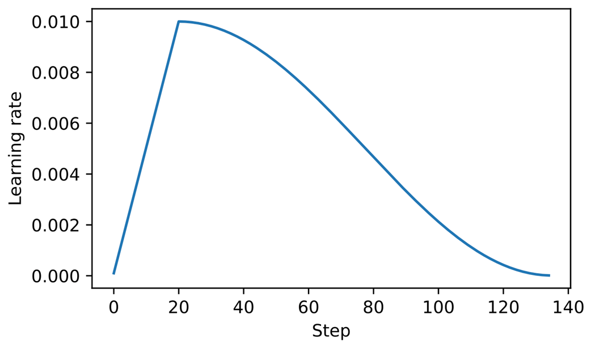

Setup: Reinitializing the Model
Reinitialize the GPT model from chapter 5 with shortened context length (256 instead of 1024) and load "The Verdict" short story for training/validation.
GPT_CONFIG_124M = {
"vocab_size": 50257,
"context_length": 256, # Shortened from 1024
"emb_dim": 768,
"n_heads": 12,
"n_layers": 12,
"drop_rate": 0.1,
"qkv_bias": False
}
model = GPTModel(GPT_CONFIG_124M)
model.to(device)
n_epochs = 15
initial_lr = 0.0001
peak_lr = 0.01
total_steps = len(train_loader) * n_epochs
warmup_steps = int(0.2 * total_steps) # 20% warmup = 27 steps
D.1 Learning Rate Warmup
Purpose: Stabilize training of complex models like LLMs by gradually increasing the learning rate from a very low initial value to a maximum (peak) value. Smaller weight updates early on decrease the risk of large, destabilizing updates.
Warmup steps typically 0.1% to 20% of total steps.
Warmup Implementation
optimizer = torch.optim.AdamW(model.parameters(), weight_decay=0.1)
lr_increment = (peak_lr - initial_lr) / warmup_steps
global_step = -1
for epoch in range(n_epochs):
for input_batch, target_batch in train_loader:
optimizer.zero_grad()
global_step += 1
if global_step < warmup_steps:
lr = initial_lr + global_step * lr_increment
else:
lr = peak_lr
for param_group in optimizer.param_groups:
param_group["lr"] = lr
Figure D.1 -- Learning Rate Warmup

From the book (Raschka, 2025)Learning rate increases linearly for the first 20 steps, then remains constant at the peak value (0.01).
D.2 Cosine Decay
Purpose: Modulate learning rate after warmup using a cosine curve, reducing it to nearly zero. Gradual decrease helps minimize risk of overshooting loss minima and ensures stability in later training phases.
Cosine Decay Implementation
import math
min_lr = 0.1 * initial_lr
for epoch in range(n_epochs):
for input_batch, target_batch in train_loader:
optimizer.zero_grad()
global_step += 1
if global_step < warmup_steps:
lr = initial_lr + global_step * lr_increment # Linear warmup
else:
progress = ((global_step - warmup_steps) /
(total_training_steps - warmup_steps))
lr = min_lr + (peak_lr - min_lr) * 0.5 * (
1 + math.cos(math.pi * progress) # Cosine annealing
)
for param_group in optimizer.param_groups:
param_group["lr"] = lr
Figure D.2 -- Warmup + Cosine Decay

From the book (Raschka, 2025)First 20 steps: linear warmup. Then cosine decay reduces the learning rate in a half-cosine cycle down to the minimum value.
D.3 Gradient Clipping
Purpose: Enhance training stability by setting a threshold above which gradients are down-scaled. Uses L2 norm (Euclidean norm) to ensure parameter updates stay within a manageable range.
Example
For gradient matrix G = [[1, 2], [3, 4]]: |G|2 = sqrt(1+4+9+16) = 5. With max_norm=1, scaling factor = 1/5, so G' = [[0.2, 0.4], [0.6, 0.8]].
def find_highest_gradient(model):
max_grad = None
for param in model.parameters():
if param.grad is not None:
grad_values = param.grad.data.flatten()
max_grad_param = grad_values.max()
if max_grad is None or max_grad_param > max_grad:
max_grad = max_grad_param
return max_grad
print(find_highest_gradient(model)) # tensor(0.0411)
torch.nn.utils.clip_grad_norm_(model.parameters(), max_norm=1.0)
print(find_highest_gradient(model)) # tensor(0.0185) -- substantially smaller
D.4 The Modified Training Function
Combines all three techniques: linear warmup, cosine decay, and gradient clipping.
Complete train_model Function
def train_model(model, train_loader, val_loader, optimizer, device,
n_epochs, eval_freq, eval_iter, start_context, tokenizer,
warmup_steps, initial_lr=3e-05, min_lr=1e-6):
train_losses, val_losses, track_tokens_seen, track_lrs = [], [], [], []
tokens_seen, global_step = 0, -1
peak_lr = optimizer.param_groups[0]["lr"]
total_training_steps = len(train_loader) * n_epochs
lr_increment = (peak_lr - initial_lr) / warmup_steps
for epoch in range(n_epochs):
model.train()
for input_batch, target_batch in train_loader:
optimizer.zero_grad()
global_step += 1
# Learning rate scheduling
if global_step < warmup_steps:
lr = initial_lr + global_step * lr_increment
else:
progress = ((global_step - warmup_steps) /
(total_training_steps - warmup_steps))
lr = min_lr + (peak_lr - min_lr) * 0.5 * (
1 + math.cos(math.pi * progress))
for param_group in optimizer.param_groups:
param_group["lr"] = lr
track_lrs.append(lr)
loss = calc_loss_batch(input_batch, target_batch, model, device)
loss.backward()
# Gradient clipping after warmup
if global_step >= warmup_steps:
torch.nn.utils.clip_grad_norm_(model.parameters(), max_norm=1.0)
optimizer.step()
tokens_seen += input_batch.numel()
if global_step % eval_freq == 0:
train_loss, val_loss = evaluate_model(...)
print(f"Ep {epoch+1} (Iter {global_step:06d}): "
f"Train loss {train_loss:.3f}, Val loss {val_loss:.3f}")
generate_and_print_sample(model, tokenizer, device, start_context)
return train_losses, val_losses, track_tokens_seen, track_lrs
Training Results
Ep 1 (Iter 000000): Train loss 10.934, Val loss 10.939 Ep 1 (Iter 000005): Train loss 9.151, Val loss 9.461 ... Ep 15 (Iter 000130): Train loss 0.035, Val loss 6.938 Every effort moves you?" "Yes--quite insensible to the irony. She wanted him vindicated--and by me!" He laughed again...
Note: Training takes ~5 minutes on a MacBook Air. The model begins to overfit after a few epochs due to the small dataset. The function works correctly since it minimizes training loss effectively.